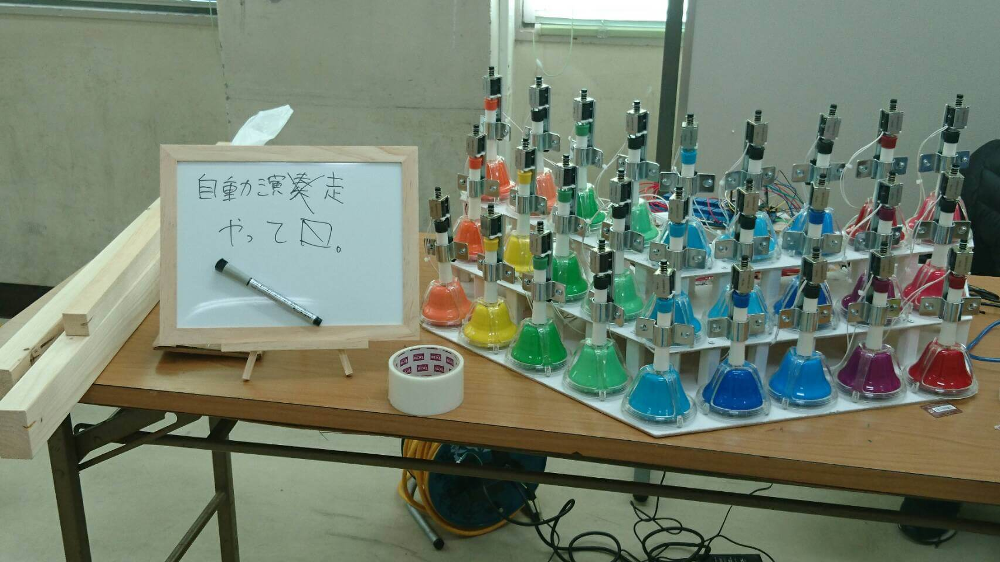
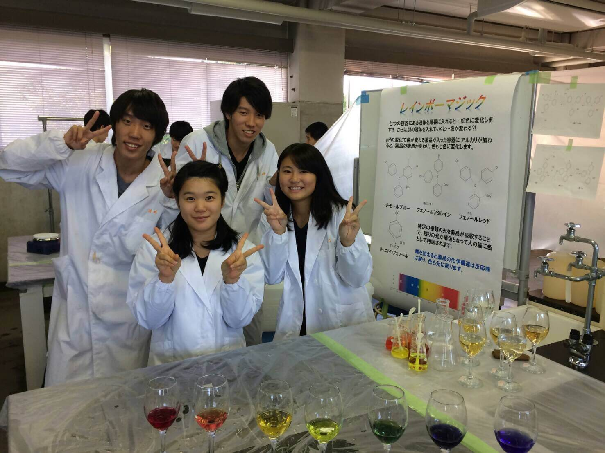

電子制御工学科展
場所：1年機械工学科教室（1M教室）
今年チャレンジいたしましたのは、磁性流体時計の製作です。磁性流体とは、液体状のものが磁石を近づけると磁石に反応して動くものです。それを使い時計を作りました。他には昨年展示していた自動ハンドベル演奏機の演奏や2足歩行ロボットの展示、レゴマインドストームを使ったラジコンなどがあります。みなさんぜひ電子制御工学科展に足を運んでください！

情報工学科展
場所：2年情報工学科教室（2I教室）
今年も情報工学科展は、趣味方向から新分野まで、幅広く行います！
展示内容
・セキュリティ:
そのカメラ、問題につき（不正アクセス、ダメ、ゼッタイ）
ネットワークカメラへのハッキング実演
・VR
:
ついに奈良高専もVR化
VR高専
・音楽ゲーム
:
工業系高専生による自主制作ゲーム
Wave-Tone
今年の情報工学科展もよろしくお願いします！！
物質化学工学科展
場所：化学実験室
物質化学工学科展では来場された皆さんに化学の楽しさ、面白さを伝えるために目の前で不思議な化学実験を行います。
さらに、皆さんにより近く「化学」に触れてもらうため、子供用白衣の貸出し、また今回は実際に「やってみる」をテーマとした体験型の実験を展示しております。
小学生の皆さん！
来たら夏休み、冬休みの自由研究が大成功すること間違いなし！
中学生の皆さん！
高専の物質化学工学科に入学を検討中なら、説明会とはまた違った見学ができる良い機会ですよ！
是非、老若男女問わずお越しください。
